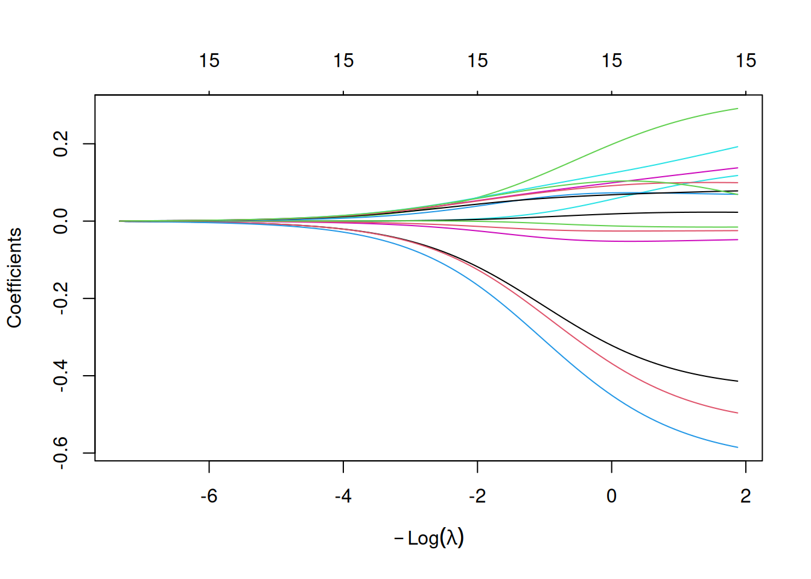

Como já vimos anteriormente, a seleção dos parâmetros de regularização é um passo importante na regularização. Não deve ser surpresa para o leitor mais atento que isso será feito por validação cruzada. Uma vez que já apresentamos os principais passos do IRLS-EN, doravante usaremos o pacote glmnet (J. Friedman, Hastie, Tibshirani, et al. (2025)), que foi desenvolvido - dentre outros - pelas mesmas mentes por trás da regressão lasso e elastic net, como Tibshirani e Hastie. O pacote conta com diversas rotinas para a implementação da regularização em muitas famílias comuns de MLG (normal, binomial, poisson, etc.).
DicaOutros pacotes
Outros pacotes podem ser usados para ajustar regularizações em GLMs, cada um com suas particularidades. O glmnet, por exemplo, é um dos poucos pacotes que permitem a implementação em qualquer família de GLMs, mas o pacote não é compatível com a sintaxe de fórmulas do R. Uma série de alternativas ao glmnet são apresentadas em Tay, Narasimhan, & Hastie (2023).
Considere a penalidade do elastic net do pacote glmnet.
Para diferentes escolhas de \(\alpha \in [0,1]\), serão gerados diferentes penalidades, todas potencialmente razoáveis. Como essas regras podem ser vistas como restrições do espaço paramétrico, a força dessa restrição será dada por \(\lambda\). Abaixo temos uma aplicação shiny que mostra a importância de uma boa escolha de parâmetros.
Código
# Aqui tratamos t = 1 / lambda, embora isso não seja necessariamente verdade,# é claro que essas duas grandezas são inversamente proporcionais.library(shiny)ui =fluidPage(titlePanel("Região do Elastic Net em R²"),sidebarLayout(sidebarPanel(sliderInput("alpha", "α", min =0, max =1, value =0.5, step =0.01),sliderInput("lambda", "λ", min =0.2, max =1, value = .9, step =0.1) ),mainPanel(plotOutput("plot", height ="600px") ) ))server =function(input, output, session) { output$plot =renderPlot({ alpha = input$alpha tval =1/input$lambda res =300 R =10 b =seq(-R, R, length.out = res) grid =expand.grid(b1 = b, b2 = b) grid$val = (1- alpha) * (abs(grid$b1) +abs(grid$b2)) /2+ alpha * (grid$b1^2+ grid$b2^2) Z =matrix(grid$val, nrow = res, ncol = res, byrow =FALSE)image(x = b, y = b, z = Z <= tval,xlim =c(-10, 10), ylim =c(-10, 10),xlab =expression(beta[1]),ylab =expression(beta[2]),axes =FALSE)axis(1); axis(2); box()abline(h =0, v =0, lty =2)contour(x = b, y = b, z = Z, levels = tval, add =TRUE) })}shinyApp(ui, server)
Shiny applications not supported in static R Markdown documents
3.1.1 Tunando parâmetros com glmnet
Fixado um \(\alpha\), a seleção de \(\lambda\) feita pelo glmnet segue as ideias de Tay et al. (2023).
É possível aplicar ideias de validação cruzada (que serão apresentadas adiante para a escolha de \(\lambda\)) para escolher o melhor \(\alpha\), mas em geral esse valor pode ser fixado pelo pesquisador de acordo com o tipo de problema. Vide os casos extremos abaixo de regressão lasso e ridge.
library(glmnet)fit =glmnet(X[,-1], Y, alpha =0, family ="poisson")plot(fit)
fit =glmnet(X[,-1], Y, alpha =1, family ="poisson")plot(fit)

fit =glmnet(X[,-1], Y, alpha =1, family ="poisson", nlambda =10)print(fit)
Lambda pode ser selecionado como aquele que dá um modelo com um número pré-selecionado de covariáveis. Outra possibilidade (mais comum) é selecionar o \(\lambda\) que minimiza o erro quadrático médio.
cvfit =cv.glmnet(X[1:200,-1], Y[1:200], family ="poisson")plot(cvfit)
O EQM é calculado usado o K-fold cross-validation - mais sobre isso pode ser visto no capítulo 10 de Kuhn & Silge (2022). Grosso modo, os dados são divididos em \(K\) subconjuntos de igual tamanho (default \(K = 10\)) e para cada \(\lambda'\) no caminho de lambdas e \(k' \in 1:K\) faça:
Ajuste o modelo com os \(K-1\) outros subconjuntos;
Preveja o os valores do subconjunto \(k'\) a partir dos coeficientes obtidos;
Calcule o EQM nesse subconkunto que ficou de fora.
O EQM de \(\lambda'\) será o EQM dos \(K\) subconjuntos.
As linhas verticais pontilhadas trazem valores especiais de \(\lambda\). lambda.min é o valor de \(\lambda\) que dá o modelo com menor EQM. Com isso, o programa calcula lambda.1se, o \(\lambda\) que está um desvio padrão acima de lambda.min. Isso permite que o modelo cresça ao máximo as estimativas dos betas sem crescer muito o MSE.
cvfit$lambda.min
[1] 0.04464306
cvfit$lambda.1se
[1] 0.1642141
A predição de novos valores é feita por meio da função predict.
X_new =predict(cvfit, newx = X[201:250,-1], s ="lambda.1se", type ="response")head(cbind(X_new, "real"= Y[201:250]))
No R, um objeto do tipo sparse matrix aparece como saída do glmnet e é, em geral, uma matriz da classe dgCMatrix do pacote Matrix. Nesse formato, apenas os coeficientes não nulos são armazenados, o que otimiza operações de produto matricial e norma das colunas.
coef(cvfit) |>head()
6 x 1 sparse Matrix of class "dgCMatrix"
lambda.1se
(Intercept) 0.2452493
V1 -0.2790796
V2 -0.4391278
V3 0.1747526
V4 -0.5832768
V5 .
Friedman, J. H., Hastie, T., & Tibshirani, R. (2010). Regularization Paths for Generalized Linear Models via Coordinate Descent. Journal of Statistical Software, 33(1), 1–22. Obtido de https://www.jstatsoft.org/index.php/jss/article/view/v033i01
Friedman, J., Hastie, T., Tibshirani, R., et al. (2025). glmnet: Lasso and Elastic-Net Regularized Generalized Linear Models. Stanford University. Obtido de https://glmnet.stanford.edu/
Hoerl, A. E., & Kennard, R. W. (1970). Ridge Regression: Biased Estimation for Nonorthogonal Problems. Technometrics, 12(1), 55–67. Obtido de https://www.jstor.org/stable/1267351
James, G., Witten, D., Hastie, T., & Tibshirani, R. (2021). An Introduction to Statistical Learning: With Applications in R. Springer Texts em Statistics. Springer. Obtido de https://link.springer.com/book/10.1007/978-1-0716-1418-1
Kuhn, M., & Silge, J. (2022). Tidy Modeling with R. O’Reilly Media. Obtido de https://www.tmwr.org/
R Core Team. (2024). R: A Language and Environment for Statistical Computing. Vienna, Austria: R Foundation for Statistical Computing. Obtido de https://www.r-project.org/
Tay, J. K., Narasimhan, B., & Hastie, T. (2023). Elastic Net Regularization Paths for All Generalized Linear Models. Journal of Statistical Software, 106(1), 1–31. Obtido de https://www.jstatsoft.org/article/view/v106i01
Tibshirani, R. (1996). Regression Shrinkage and Selection via the Lasso. Journal of the Royal Statistical Society. Series B (Methodological), 58(1), 267–288. Obtido de https://www.jstor.org/stable/2346178
Zou, H., & Hastie, T. (2005). Regularization and Variable Selection via the Elastic Net. Journal of the Royal Statistical Society. Series B (Statistical Methodology), 67(2), 301–320. Obtido de https://www.jstor.org/stable/3647580